Motion & Light Sensor P2
- Aqara Motion & Light Sensor P2 with Thread & Matter. 120° detection, light sensing, long battery life & local automation.
Long Battery Life |
Independent Light Sensor |
Adjustable Sensitivity |
Configurable Detection Timeout |
 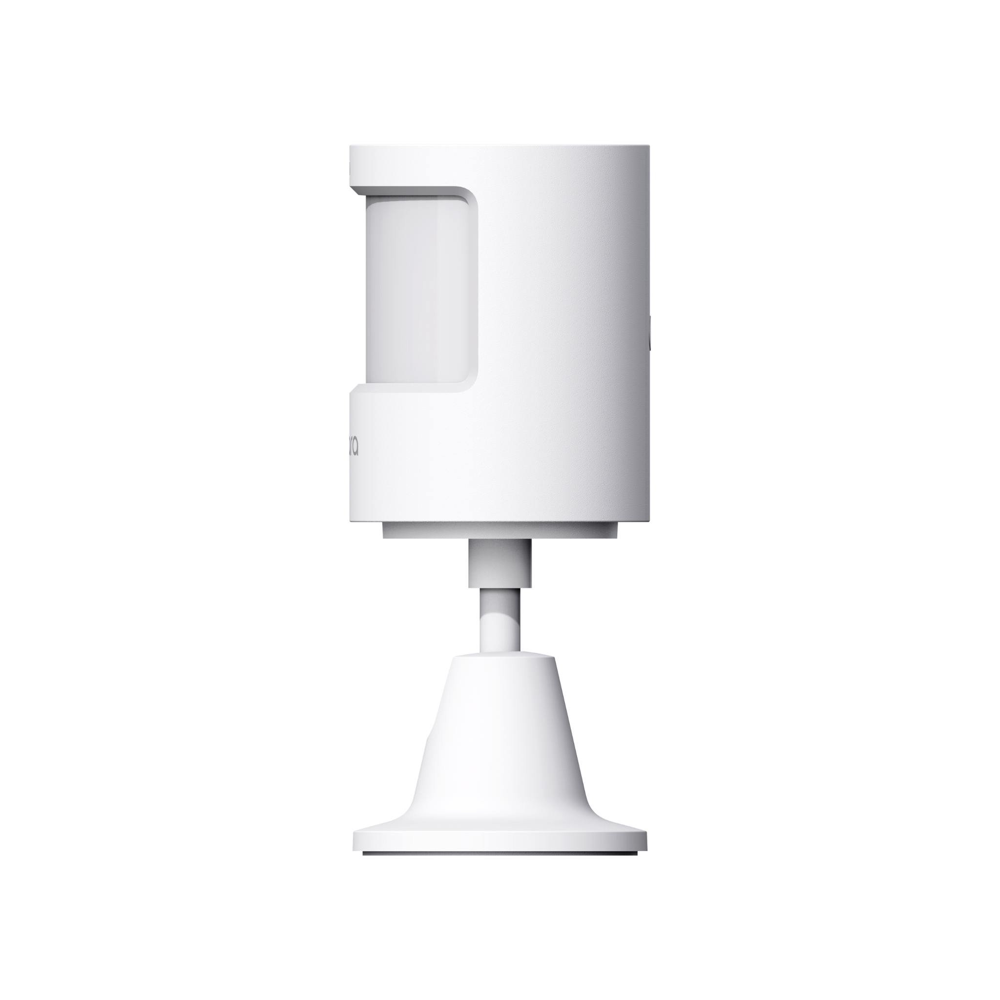
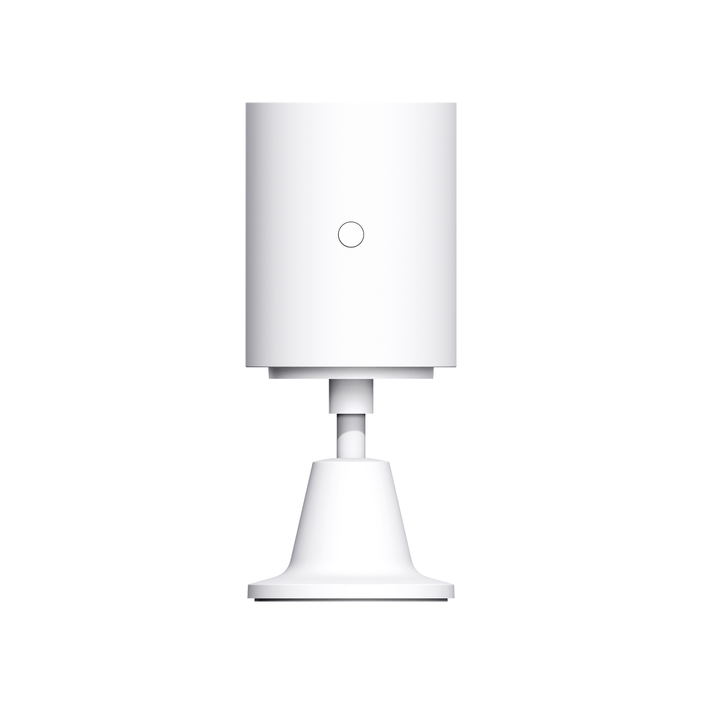
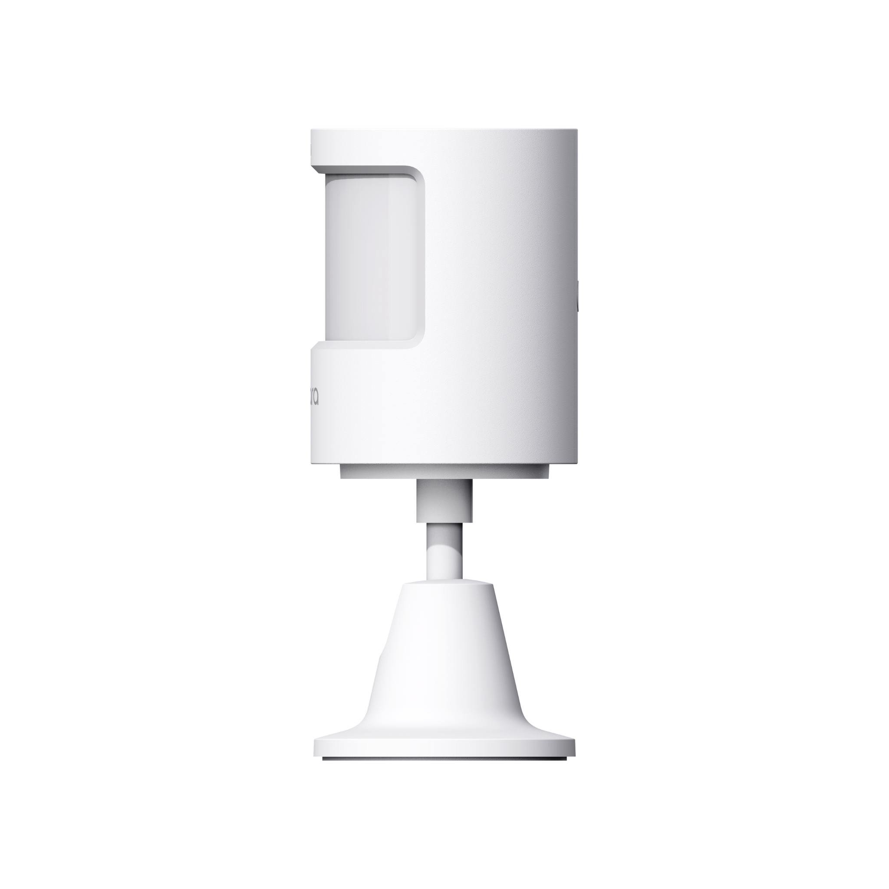
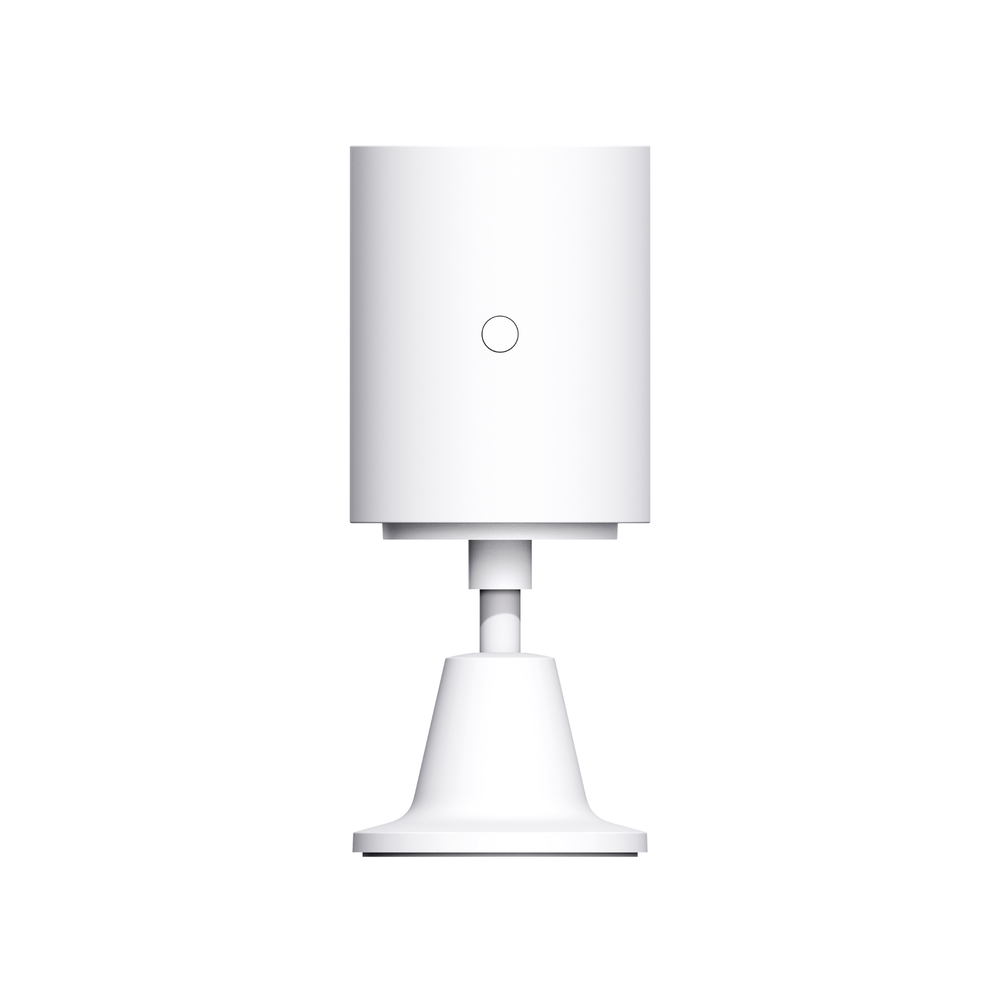
 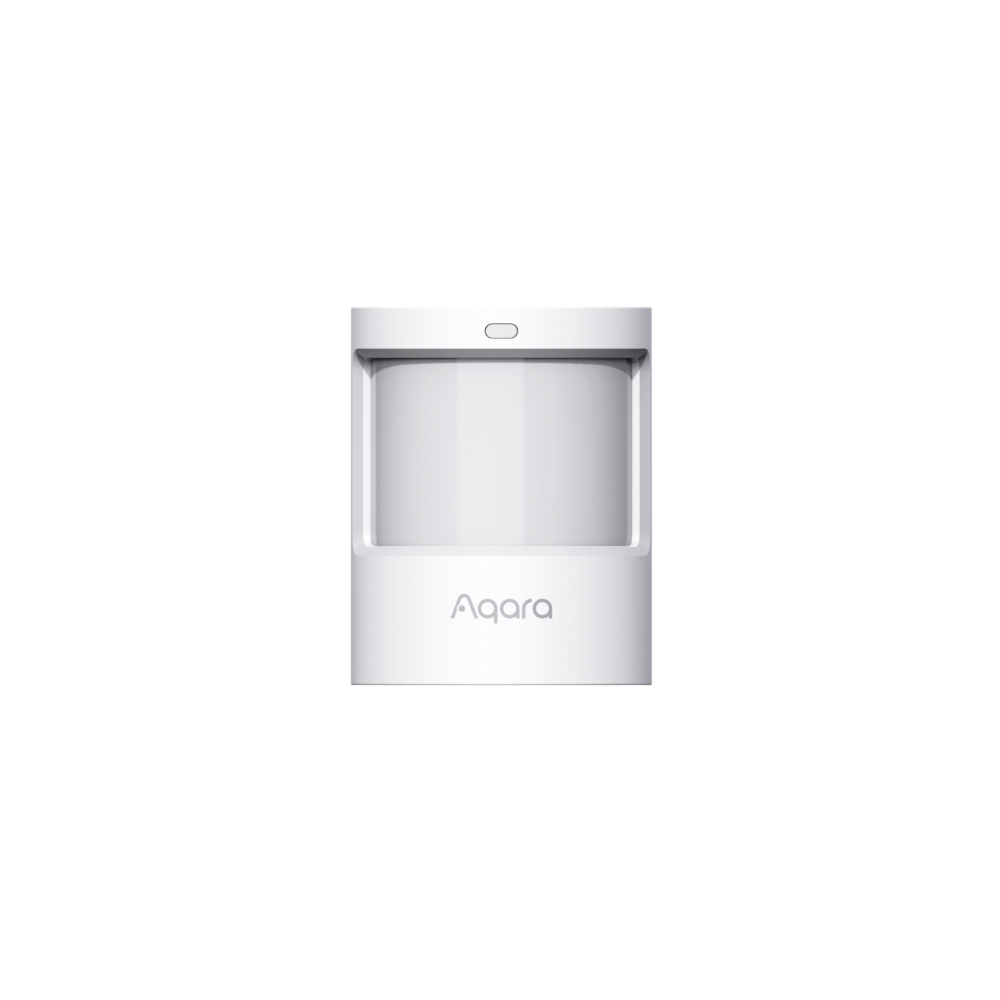
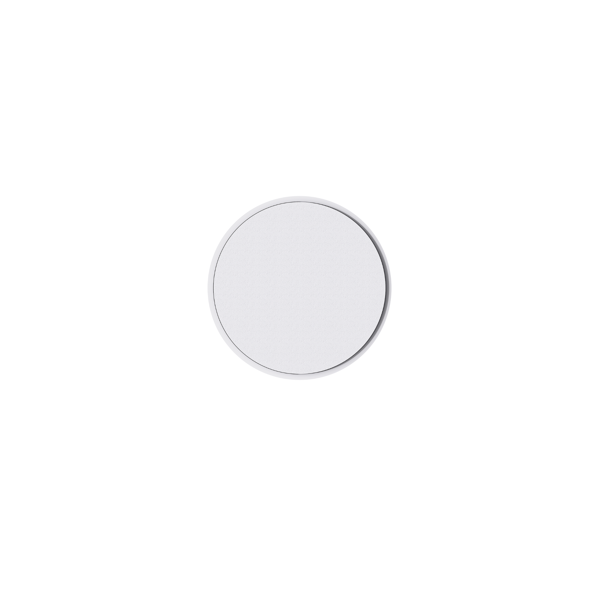
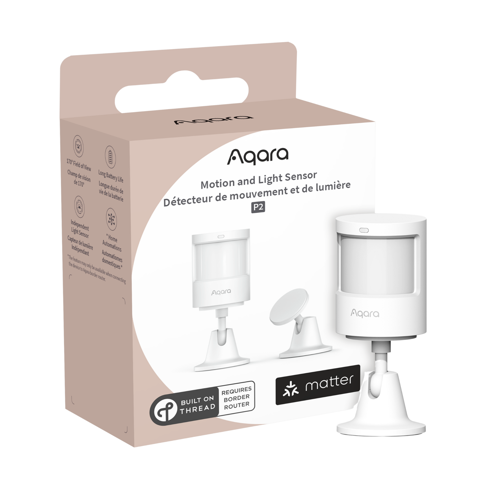
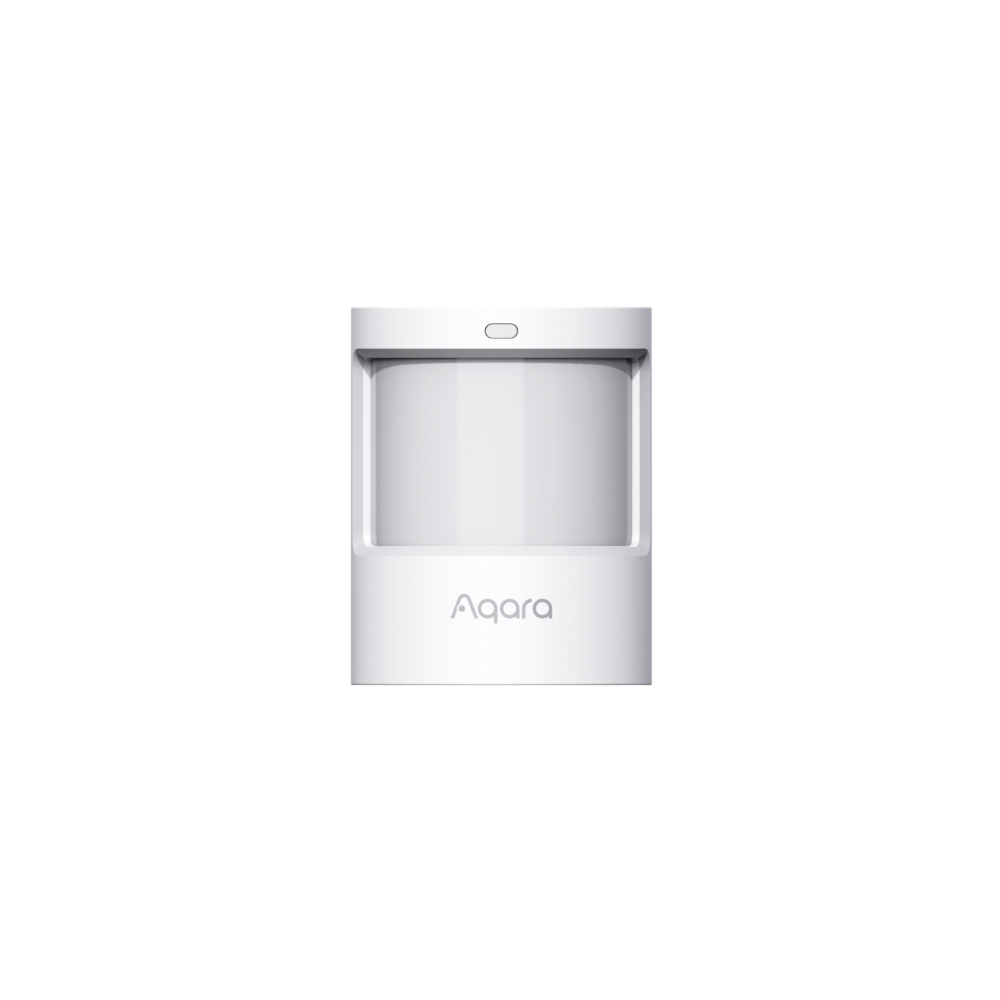
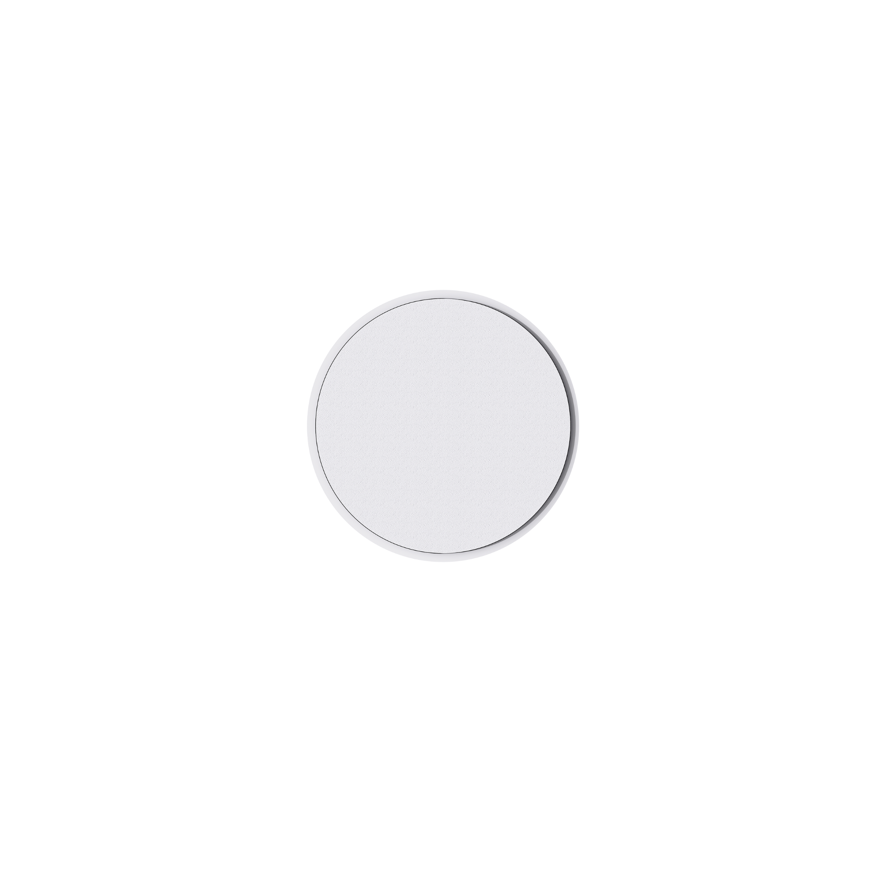
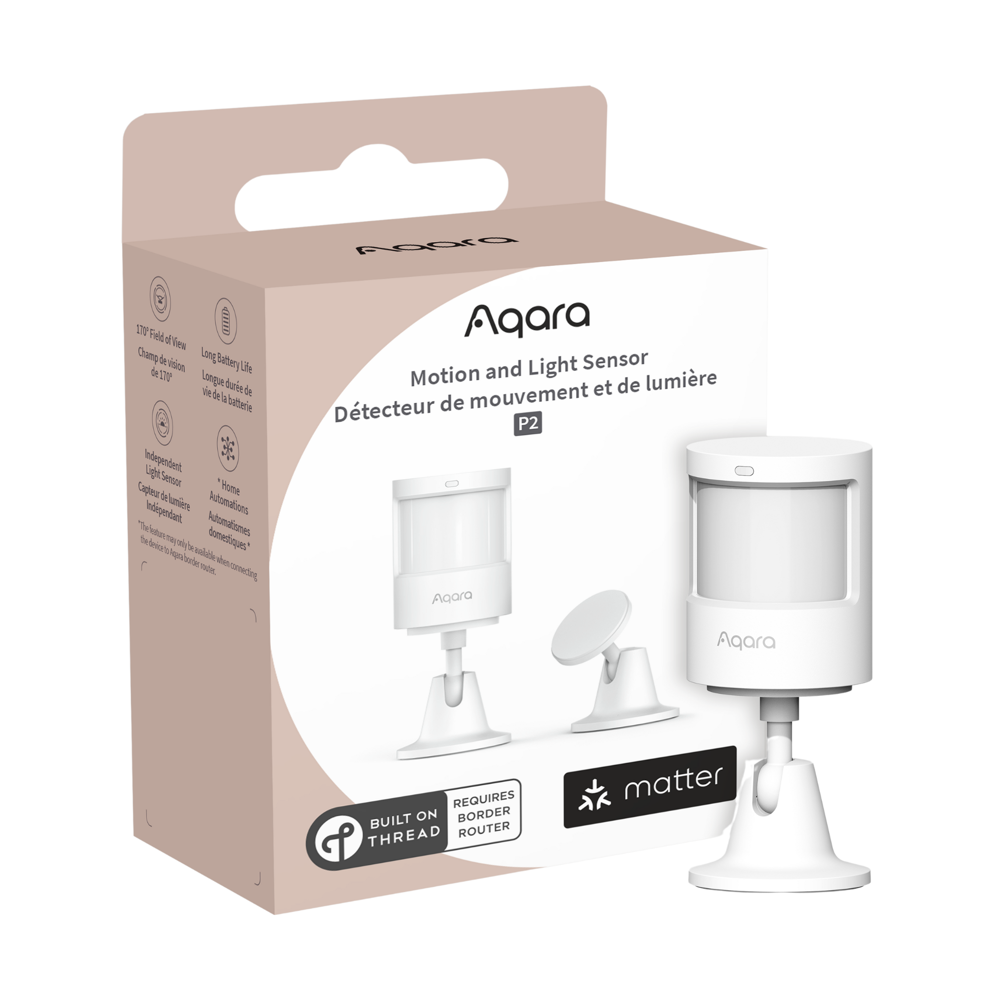
Product Info
Description
The Aqara Motion & Light Sensor P2 is a smart dual-function device featuring both infrared motion detection and a light sensor, powered by the latest Thread protocol. With long-lasting dual CR2450 batteries and Aqara’s low-power technology, the P2 ensures reliable, energy-efficient performance.
Thanks to Matter compatibility, it works seamlessly across ecosystems, making your smart home setup more flexible than ever. Perfect for lighting control, energy saving, and enhanced security automations.
Key Features
- Native Matter Support: Enter the new Matter era with ease. No more worrying about different ecosystems or protocols – all you need is a Matter app, a Matter-compatible Thread Border Router, and a Matter Controller. Enjoy simpler, more seamless connections across platforms and ecosystems.
- Independent Light Sensor*: Designed for reliable smart home control, even without the internet. With the Hub M3, your Aqara Home app runs locally, offering smooth device binding for Aqara Thread devices. Hub backups and mirroring add extra reliability – if one hub fails, another takes over. Soon, the M3 will also support direct device-to-device connections, ensuring your smart home keeps working, hub or no hub.
- High Precision and Wide Angle**: The P2 offers a 120° detection angle with a range of up to 7 m (extendable to 10 m via the Aqara Home app) using PIR technology. It also comes with a 360° adjustable stand, so you can position it perfectly for accurate motion detection where you need it most.
- Energy-Efficient and Convenient: Save energy without effort. The P2 can automatically switch on lights or exhaust fans when it detects movement, and turn them off when the space is empty. No more worries about leaving devices running when you’re not at home.
- Local and Remote Alerts***: Place the Aqara Motion & Light Sensor P2 in key areas of your home to monitor unusual activity. Get instant notifications through the app or speaker, and connect it with other smart devices for a stronger, more comprehensive home security system.
- Easy to Install Anywhere: The sensor includes an adjustable stand***** for simple installation on walls, ceilings, or flat surfaces. Its flexible positioning makes it ideal for specific areas, like desks or entryways. Powered by two CR2450 lithium batteries, the P2 also offers one of the longest lifespans among Matter over Thread sensors.
- Exclusive Aqara Home Features: When connected to the Hub M3 and the Aqara Home app, the P2 unlocks advanced functions such as enhanced automations, adjustable detection sensitivity and timeout, motion indication, and a local alert system – giving you even greater control and flexibility.
Note:
* The light sensor functionality may be unavailable with some Matter apps, such as Amazon Alexa.
** The detection angle and the sensitivity may vary depending on the ambient temperature and the distance.
*** Alert/security system function is not available in all the ecosystems (e.g., in Alexa it has a limited availability).
**** The local automation capabilities may vary depending on the Matter ecosystem the product is connected to. For the best possible experience, Aqara Home and Hub M3 are advised.
***** Offline version includes 2 stands.
****** The battery life depends on the particular Matter ecosystem and the number of Matter ecosystems the device is connected to.
******* To connect the sensor to Aqara Home, the Hub M3 and software OTA is required.
Specifications
| Model | ML-S03D |
| Colour | White |
| Battery | CR2450 x 2 |
| Wireless Protocol: | Thread, Bluetooth 5.0 |
| Bluetooth Operation Frequency | 2402-2480 MHz |
| Bluetooth Maximum Output Power | ≤ 13 dBm |
| Thread Operation Frequency | 2405-2480 MHz |
| Thread Maximum Output Power | ≤ 13 dBm |
| Dimensions | 33.1 x 33.1 x 41.6 mm (1.3 x 1.3 x 1.6 in.) |
| Operating Temperature | -10°C ~ 55°C (14°F ~ 131°F) |
| Operating Humidity | 0 - 95%RH, non-condensing |
| What's in the Box | Sensor Main Unit x1, Holder x2, Sticker x4, User Manual x1 |
Automations and Complementary Products
Click a product image to go to its page details
Scene: Lights That Follow You:
Bring your space to life with lighting that moves with you. Whether you're working at your desk, mixing drinks at the bar, or relaxing on the sofa, your lights adjust instantly for comfort and efficiency.
| Required Automation Products: | Motion and Light Sensor P2 |
 Hub M3 |
 LED Light Strip |
Automation Setup
IF (Condition) – motion is detected in a specific zone // THEN (Action) - turn on the lights for that zone // (Execution Rule:) automatically turn lights off when you leave
Scene: Intelligent Light & Energy Control:
Keep your home cool and energy-efficient without lifting a finger. When sunlight floods the room, your curtains automatically close, helping reduce heat and lowering cooling costs.
| Required Automation Products: | Motion and Light Sensor P2 |
Hub M3 |
 Roller Shade Driver E1 |
 Curtain Driver E1 |
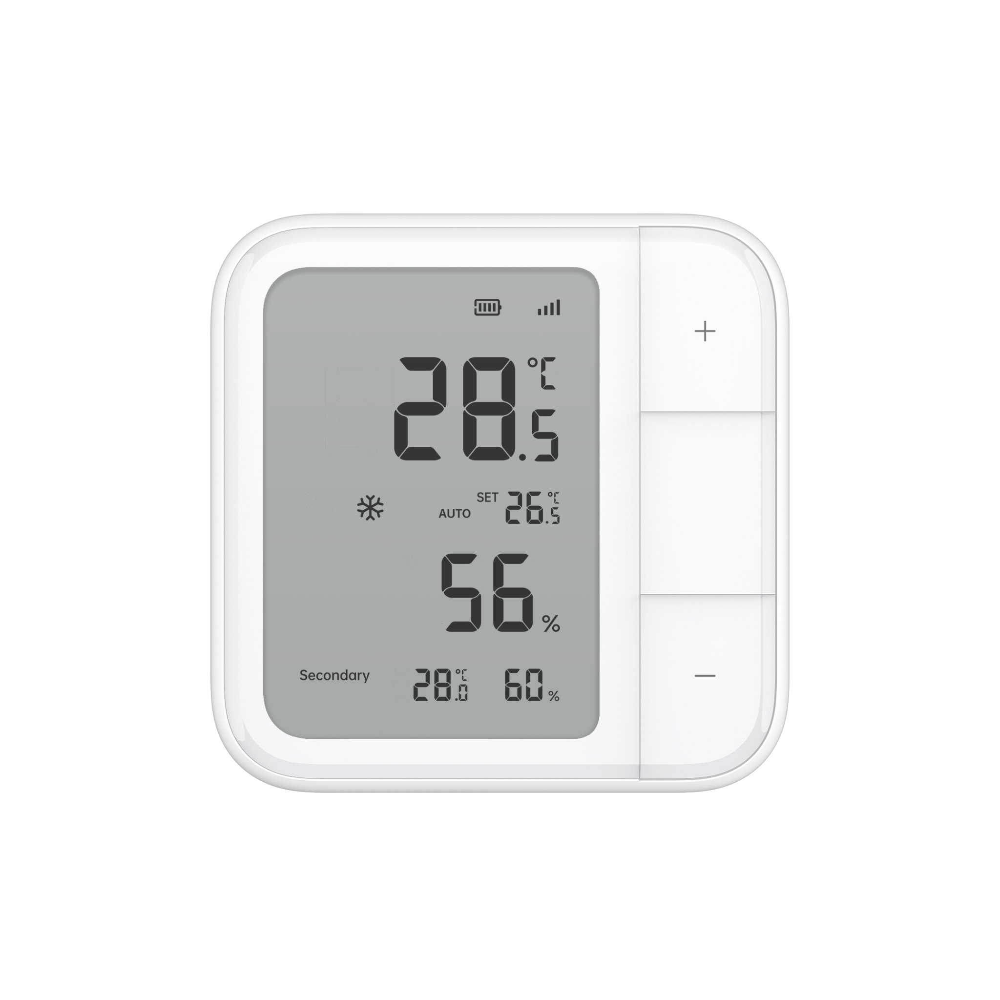 Climate Sensor W100 |
Automation Setup
IF (Condition) – ambient light exceeds the set brightness threshold // THEN (Action) - close the roller shades automatically
Scene: Local and Subscription-Free Security with Aqara Home:
Switch between Away, Home, and Night modes seamlessly. Get only relevant notifications while cameras and sensors work together to protect your home without monthly fees.
| Required Automation Products: | Motion and Light Sensor P2 |
Hub M3 |
 Camera Hub G3 |
Automation Setup
IF (Condition) – motion is detected while in Away Mode // THEN (Action) – trigger an instant alert and start camera recording
Product Support Documents
- Step by step installation instruction video:
Installation Video (00:05:15) - Product User Manual:
User Manual (PDF) - Product FAQs:
Frequently Asked Questions (PDF)